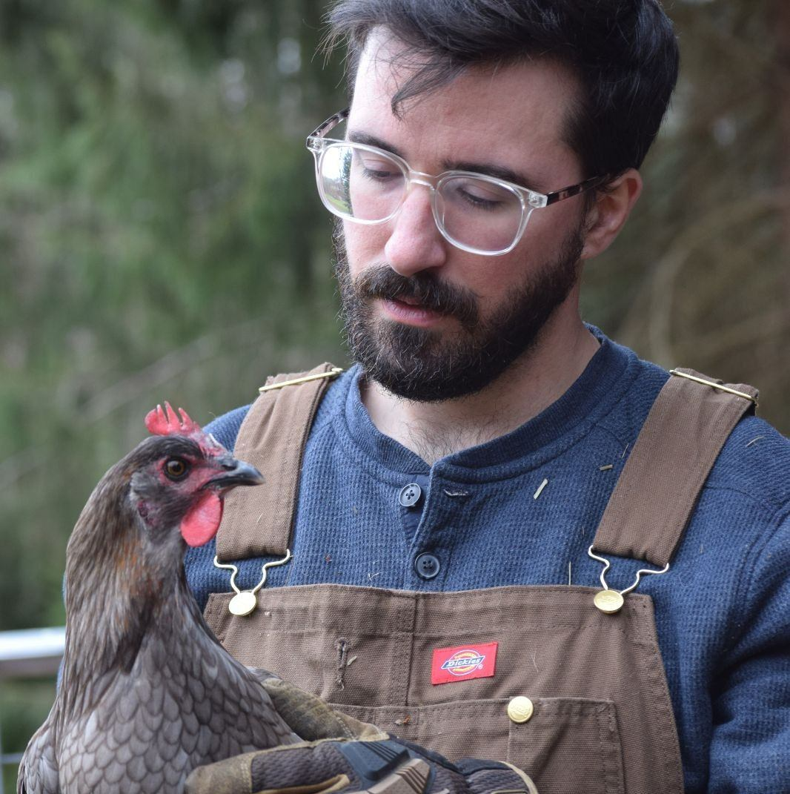

cat about.txt
I'm an ML engineer at Unsloth working on open source software for LLM training and fine-tuning. My focus is on memory / speed optimizations and distributed training.
I was formerly an ML engineer at Axolotl AI, implementing various memory and speed optimizations for language model training, scaling it to multi-GPU / multi-node workloads, and generally improving the reliability / usability of our open source software.
Before that, I was at AWS as an ML engineer, where I built object detection for landmines, stood up a few LLM + RAG apps, and did various other applied ML activities.
Even earlier, I was at Sensor Tower modeling active users and retention curves for mobile apps, and at Fomoro AI as a Machine Learning Engineer developing RL models for combine harvester control.
I studied computer science and math at UMass Amherst. Originally, I was interested in pure math / theory of computation and did some independent study of circuit complexity theory. Later, I became fascinated with computational neuroscience and its overlap with artificial intelligence. During my master's degree, I published some papers at the intersection of ML and comp neuro, focusing on spiking neural networks (SNNs), and built BindsNET.
I have an Erdős number of 2 (path: Paul Erdős → Miklós Ruszinkó → me).
Feel free to send me an email if you'd like to connect!

I live in rural Massachusetts with my six sheep, four chickens, and a mini australian shepherd :)
ls -la /education/
M.S. Computer Science
University of Massachusetts, Amherst
Focus: Machine Learning, AI
B.S. Computer Science
University of Massachusetts, Amherst
Focus: Theory of Computation
B.S. Mathematics
University of Massachusetts, Amherst
Focus: Mathematical Computing